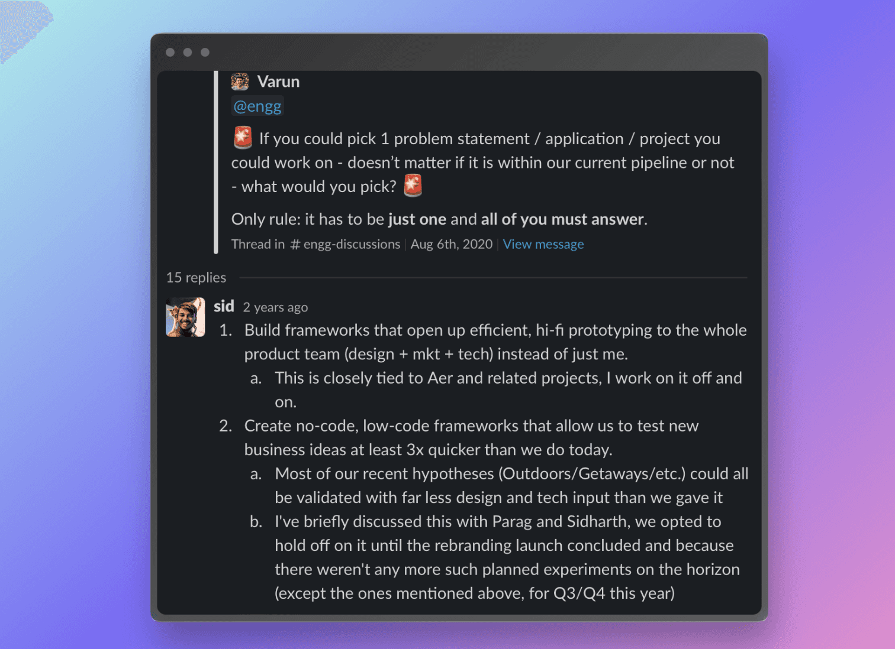

The One Thing
Penned on June 16, 2023.
My biggest weakness growing up was not being able to commit to one thing for very long. Studying, music, skating, swimming, basketball, physics: I dabbled in a lot but never stuck to one long enough to make something meaningful happen. I don't attribute it to circumstances changing, nor am I diagnosed with ADHD.
I couldn't pick one thing. It's just a personality trait I wanted to get rid of, sadly one that is becoming increasingly more common in the world.
Looking back at this year, one of my proudest achievements was realizing that I can indeed overcome that weakness. Here's a note-to-self on what happened and how it worked.
June 2021
I was a newly promoted Intern → Full-Time Employee at Headout, a team of roughly 150 people. COVID had just started to subside, vaccination had started. A promising revitalization of the tourism industry was on the horizon, and we were determined to be a part of it.
In this quest, we were rapidly exploring new verticals, markets and categories of experiences that we previously hadn't listed on Headout. Like with any form of exploration the end state was often unpredictable and ambiguous. There was a lot of guesswork and estimation involved. We didn't know what would work or how well it would work.
We ultimately emerged out of the pandemic stronger than ever, but the price we paid for the rapid exploration was having delivered substantial product collaterals (design work, code, launches, campaigns etc) that took a lot of investment in effort, but did not materialize into outcomes beyond being concepts.
I call such deliverables inert work.
In 2021, I wasn't content with where Headout stood and made it my side-quest to improve our understanding and capabilities in that situation.

Inert Work
- Put your heart and soul into designing a landing page for a product that never launched?
- Drafted a detailed PRD that got scrapped in favour of a more business-centric project?
- Wrote E2E tests for a feature that was shelved before you deployed them?
That's inert work for you — it is still "work" in that it is done with the same rigour, sincerity and confidence as any other, but hasn't yet yielded the impact that it can. As an org, you likely want to avoid this.
Easy way: Stop experimenting. Only build what you have near-100% certainty about. Minimize wastage and remove inert work altogether. This works, but also reduces the surface area for new ideas and innovation. This may or may not appeal to you depending on your scale and goals.
Hard way: Become effective at inert work. Sensitize your team to make more intelligent tradeoffs between risk, effort and investment. Understand when to build-to-learn vs. build-to-ship. Or as I refer to them: when to "hack" and when to "engineer".
That was my One Thing — the one thing in the whole company that I cared about improving so deeply, that I knew I'd have a purpose for as long as it wasn't solved well.
June 2023
We've grown 4-5x our team size. I've changed some teams, and a few roles. My day-to-day varied quite a bit from month to month. I was knee-deep in codebases one month and only hiring and interviewing in another. The only constant throughout these years was my One Thing — an unwavering belief that we needed to be better at handling our inert work and learn faster.
Did I solve it? There's still some ways to go, but I'd say we're close.
An experiment that would've taken us months in 2021, now consistently takes ~1 week to execute. We've run them for whole new categories of experiences, revamped some old ones, run marketing campaigns — all with only a few days notice, barely breaking a sweat.
Back then, a single landing page took yours truly a full 2 months to properly complete. Now we could comfortably ship one every 2-3 days if we needed to.
For a certain kind of experiments/features this is the way to go. The speed keeps us on our toes, learning and innovating. No long PRDs, no long-term scopes, no contribution to debt in our codebases, no disrupting our product's roadmap to try a small, yet-to-be-validated idea — just build, ship, learn and repeat.
With this newfound ability to move fast, also comes the expectation of learning faster ;)
A process change like this is tricky to measure. I was chasing a 3x jump in speed when I first incepted this, but feel confident saying we already crossed 10x long back.
I often see teams shipping sub-par products/features citing "speed" as their primary north-star. I also see teams obsessing over obscure design/technical details for the sake of "getting it right" without having evaluated market demand, user feedback, business feasibility etc.
High-performance people (and teams they operate in) know that building the right thing, and building the thing right, are two different paths. And they know which one to take when.
The One Thing
I don't think what I did was a difficult endeavour, it was just a matter of staying married to a problem statement long enough. I'm convinced anyone could've done it. All you'd have to do is find one (uno, eins, ek: important that this is just one) thing you deeply care about, and then remain committed to solving it for as long as it takes.
I do a fun variety of stuff at Headout, but I'll say this — imagine our universe as a giant Figma file with "Sid" and "Headout" as two slightly overlapping layers. Everything else gets blurry when you zoom out, but in that tiny intersection of the two layers you will see, clearly, just my One Thing. Forever etched as a part of both of us.
It's powerful, this One Thing. You should find yours wherever you work, and chase it with unparalleled relentlessness. It's one of the most fulfilling things you can do.
Best of luck!